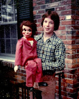
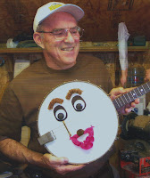

Looking back...
4/25/2010
{kind=link}

From Ted Nunes:Hi, Clinton. My sister, who has hung onto every possible piece of family blackmail material, recently discovered a photo of me and my first dummy, Cuthbert. (he was probably a re-modeled Danny O' Day, am I right?) This is probably 1976-ish. I'd forgotten that we coincidentally had the same hair color. I'd also forgotten that I operated him with my right hand. (Odd, since I'm left handed--and I do still have some hand puppets which I operate with my left hand.) I was probably trying to copy Edgar Bergen in every way I could. I never really had an act--except for doing something at a church talent show or two--and I traded my figures for some camera equipment in my mid-teens, when I switched hobbies. But I still have a soft spot for ventriloquism. I'm in a ukulele band these days and I've considered adding a short bit of ventriloquism into our show (for certain venues like retirement homes or children's performances). One (vague) idea would be a talking ukulele. I wonder if it would be possible to create a ukulele puppet character that was still playable? Thanks for the blog. I'm enjoying it quite a lot!
* * * * *
From Clinton: I love seeing those vintage pictures and often regret that I have so very few of my own. I think they actually become more special as the years pass. Thanks for sharing yours. Yes, that is one of the early Danny O'Day conversions which was completed using one of the larger 32" Dannys produced by Juro Novelty, Co. How I wish that doll was still available!
{kind=link}

I've made a "talking" banjo and could probably do something with a ukulele and keep it in playable condition. I'm always concerned that the mouth is positioned where it does not interfere with strumming and because of a ukulele's smaller size I wonder if this is possible. Maybe I can find a local music store where I could see a ukulele first hand before I ask you to send one to me. Hmmm? Let me give your project idea some thought.
Clinton